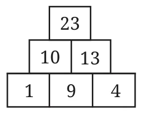
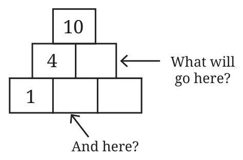
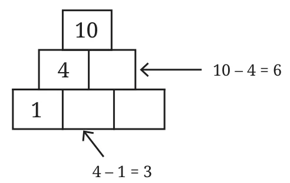
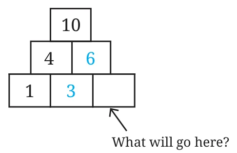
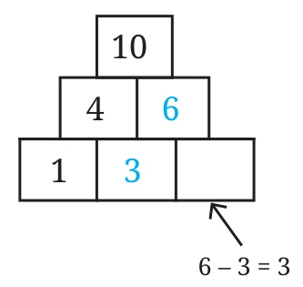
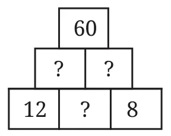
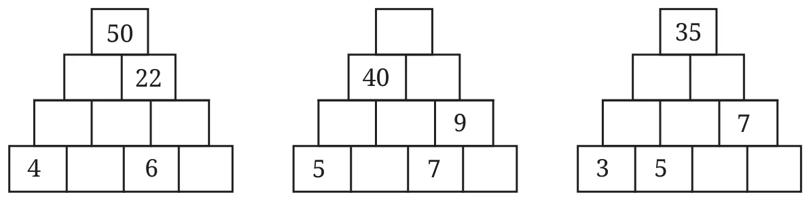
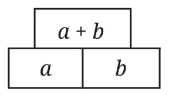

In a number pyramid, each number is the sum of the two numbers directly below it (see the figure).

Use the same rule to fill these pyramids:

How do we fill this pyramid?






What about filling in the numbers in this pyramid? Where do we start?

Let us fill the empty boxes with letter-numbers.

From the rules for filling up pyramids, we get the following equations.
- \(a + b = 60\)
- \(12 + c = a\)
- \(c + 8 = b\)
From this, we see that,
- \((12 + c) + (c + 8) = a + b = 60\)
Hence,
- \(20 + 2c = 60\)
- \(2c = 60 - 20 = 40\)
- \(c = 20\).
Once we know \(c\), we can find \(a\) and \(b\), and complete the pyramid.

Fill the following pyramids:

What is the relationship between the numbers in the bottom row and the number at the top?
Let us start with the simplest pyramid.

What about a pyramid with three rows?
Using letter numbers for the bottom row, we can write an expression for the top row.